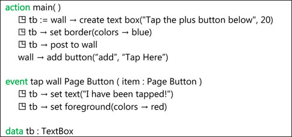

A TouchDevelop script usually needs to interact with the user. While input via a microphone and output via speakers built into, or connected to, the device are certainly possibilities, a touchscreen or a screen plus a mouse is almost always used for input and output. In TouchDevelop, the screen is known as the wall. The API provides many ways in which a script can access the wall.
3.1 Output – the writing on the wall
3.1.1 Output of simple values
Every datatype in TouchDevelop provides a method named post to wall. If that method is called, some representation of the value is displayed. Here are some simple examples.
action
main()
(1/3) → post to wall
123 → post to wall
("hello" || " there") → post to wall
(11>11) → post to wall
The code produces a result like that shown in Figure 3-1 on the left side. Note that the output is apparently displayed in reverse order. That is because the default is for each new output item to be inserted at the top of the screen, pushing previously generated output further down. The default is a good one if it is desired that the user can see the most recent item without having to scroll down.

Figure 3-1
Simple output, normal and reversed order
To display a value in a manner which stands out prominently on the screen, a TextBox value can be used. The text can be displayed in any color, with any size font, against any background color. A simple example of using a TextBox to display a string is shown in Figure 3-2. The script is shown on the left and the result of running it is shown on the right.
Figure 3-2
Displaying a string using a TextBox
3.1.2 Direction of Output
The default direction of output on the screen can be changed so that items are displayed from top-to-bottom. To do so, make the method call:
wall →set reversed(true)
The following sample script should make the effect clear.
action
main()
(1/3)→post to wall
123→post to wall
wall →set reversed(true)
("hello" || " there") →post to wall
(11>11) →post to wall
The result of running the script is shown in Figure 3-1 on the right side. Comparison of the two snapshots shows that the call affected all output on the screen – not just the output generated after the call was made.
In summary, the effect of making the call with an argument of true is to cause existing output on the screen to be reordered if necessary, so that the oldest output is at the top and the newest output is at the bottom. Future calls to
post to wall
cause the new output to be added at the bottom. Making the call
wall →set reversed(false)
reorders the output again so that the oldest output is at the bottom and the newest is at the top, then subsequent calls to post to wall will again cause output to be inserted at the top of the screen.
3.1.3 Output of composite values
Displaying a composite value such as one with the DateTime or Vector3 type produces an appropriately formatted result. Displaying a collection of values produces a list of items on the screen, each element formatted in the appropriate manner for the element’s datatype.
Figure 3-3 gives a few examples of composite values being displayed.

Figure 3-3
Displaying composite values
3.1.4 Output of media values
Each media value is displayed on the screen in a manner appropriate for the datatype. In the case of a Song or a Song Album value, there is also a play button displayed. Tapping that play button causes the song or the song album to be played.
A summary of what is displayed for each datatype is given in Table 3-1.
Table 3-1
Display of media values
Datatype
|
What is displayed
|
|---|---|
Picture
| The picture, resized if necessary to fit the screen. |
Board
| The board (note that the board can be changed and redisplayed dynamically). |
Song
| A play button plus whichever of these items is available: duration, artist, name of album from which the song was obtained, the album cover, track number. |
Sound
| The text “A sound…” and a button to play the sound. |
Picture Album
| A sequence of all pictures in the album. |
Song Album
| A play button plus whichever of these items if available: total duration, artist, name of album, the album cover, number of tracks. |
3.1.5 Output of social values
Each value managed by the social API is displayed in a manner appropriate for the datatype. The Contact and Link values include buttons which can be tapped to initiate a phone call or send a message.
A summary of what is displayed for each datatype is given in Table 3-2.
Table 3-2
Display of social values
Datatype
|
What is displayed
|
|---|---|
Appointment
| The date, time and details of the appointment. |
Contact
| The name of the contact plus buttons which can be tapped to initiate a phone call or send a SMS message or send an email to this contact. |
Link
| The name associated with the link plus a button to initiate a phone call, send a SMS message or send an email, depending on the kind of link. |
Location
| A scrollable Bing map which shows the location. |
Message
| The name of the sender, the time when the message was sent plus the contents of the message. |
Place
| The name associated with the place plus a thumbnail map showing the location of the place. |
3.1.6 Output of web values
There are several datatypes specifically associated with web access. Values of five of these types are displayed on the wall according to Table 3-3.
Table 3-3
Display of web values
Datatype
|
What is displayed
|
|---|---|
Form Builder
| The current contents of the form |
Json Object
| The string value of the JSON object. |
Web Request
| Two lines which display the accepted webpage encodings followed by a line which contains the keyword GET followed by a URL. |
Web Response
| The response |
Xml Object
| The string value of the XML object |
3.2 Input of values from the touchscreen
The wall API provides several methods which prompt the user to enter a value or pick a value from a range of possibilities. These methods are listed in Table 3-4. Some sample statements to illustrate their use are shown in Figure 3-4.
Table 3-4
Prompting for input
Datatype
|
Method
|
Description
|
|---|---|---|
Boolean
|
ask boolean
| An OK button and a Cancel button are displayed. Tapping OK returns true and tapping Cancel returns false |
Number
|
ask number
| The user is prompted to enter a number, which is returned as the result |
String
|
ask string
| The user is prompted to enter a string which is returned as the result |
DateTime
|
pick date
| The user is prompted to pick a date; that date combined with a time of 12 noon is returned as the result |
String
|
pick string
| A list of strings is displayed and the user is prompted to pick one; the index of the selected string is returned as the result |
DateTime
|
pick time
| The user is prompted to pick a time of day; that time combined is with an undefined date and returned as the result |
3.3 Updating the wall’s content
Each call of post to wall adds a new item on the screen. However it is frequently the case that we wish to leave the number of items unchanged and simply alter the value of one of them. The simplest, least sophisticated and least efficient way to achieve that effect would be to invoke
wall → clear
and then re-display all the items with their new values.
However, TouchDevelop provides some alternatives which should be preferred.
Figure 3-4
Prompting for input
3.3.1 Updatable textbox
For the display of text which needs to be changed while the script is executing, a textbox provides an easy-to-use mechanism. Figure 3-5 shows a simple script which displays a line of text on the screen and then changes the text when the page button at the bottom is tapped.
The call to the set text method of the textbox causes the string displayed on the screen to be updated immediately. It is also possible to change the size of the text and the colors used in the textbox on the fly. Note that if the same textbox value has been posted to the wall more than once, then the set text method will cause all of those occurrences on the wall to be updated.

Figure 3-5
An updatable textbox (/censaair)
3.3.2 Updating a board display
For updating more sophisticated displays of information on the screen, an instance of the Board datatype is normally used. Pictures, text messages and shapes can all be drawn on the board as sprites. Each sprite can have its position, orientation or content changed individually. Then a call to the update on wall method of the board causes a rendering of the board on the screen to be immediately updated. Although the main usage of the Board datatype was intended to be for implementing games, it is useful in any situation where information displayed on the screen needs to be changed.
A re-implementation of the previous example where a board is used instead is shown in Figure 3-6. The use of a board and sprites provides much greater flexibility because the positions and orientations of the items on the screen can also be updated.
Figure 3-6
Updating text using a board (/wkoxnasz)
3.4 Events on the touchscreen
3.4.1 Tap wall events
A script can receive input via tap events on the screen. There is one event type for nearly every kind of value which can be displayed on the screen. A full list is provided in Table 3-5.
If one of these values is displayed on the screen, then tapping the value will cause the corresponding event to be executed. The tapped item is passed as a parameter to the event. The normal parameter passing rules are used, implying that a copy of the value is passed if the item is a value type and a reference to the value is passed if the item is a reference type. A trivial script which shows the use of tap events to select a string is shown in Figure 3-7.
Figure 3-7
Using tap wall events
3.4.2 Tap board events
Although it is easy to display values on the screen and associate ‘tap wall’ events with them, there is very little control over where the values are positioned. To achieve full control over placement, it is necessary to display the values as sprites on an instance of the Board datatype. If the script displays the board with its sprites on the screen, then tapping or swiping or dragging one of the sprites will trigger an event that can be captured by the script.
A trivial script which brightens or darkens the color of a solid rectangle when buttons are tapped is shown in Figure 3-8.
Table 3-5
Tap wall events
Event | What happens |
|---|---|
tap wall Appointment
| Each event receives a single parameter. That parameter has the datatype named in the event. When any value of this type is tapped on the screen, the corresponding event is triggered. For value types, a copy of the value which was tapped is passed as the parameter. For reference types, a reference to the tapped value is passed as the parameter. |
tap wall Camera
| |
tap wall Color
| |
tap wall Contact
| |
tap wall Link
| |
tap wall Message
| |
tap wall Motion
| |
tap wall Page Button
| |
tap wall Picture
| |
tap wall Picture Album
| |
tap wall Place
| |
tap wall Playlist
| |
tap wall Song
| |
tap wall Song Album
| |
tap wall Sound
| |
tap wall String
| |
tap wall TextBox
| |
tap wall Vector3
|
Simply defining a variable with a datatype of Board or Sprite or Sprite Set in the data section of the script causes new event types to be made available. In the case of the script shown in Figure 3-7, the data section contains three sprites named rectangle, Lighter and Darker, it contains controls which has type Sprite Set, and board which has type Board.
The existence of these globally visible data variables creates 14 events with these names:

- tap sprite: rectangle, swipe sprite: rectangle, drag sprite: rectangle
- tap sprite: Lighter, swipe sprite: Lighter, drag sprite: Lighter
- tap sprite: Darker, swipe sprite: Darker, drag sprite: Darker
- tap sprite in controls, swipe sprite in controls, drag sprite in controls
- tap board: board, swipe board: board
Figure 3-8
Using sprite events (/akmcnpux)
For sprites, the event names have the pattern tap/swipe/drag sprite: xxx where xxx is the name of the sprite. For sprite sets, the names have the pattern tap/swipe/drag sprite in YYY where YYY is the name of the set. For boards, the names have the pattern tap/swipe board: ZZZ where ZZZ is the name of the board. Parameters passed to each event identify which sprite was touched (when it is a sprite set event), the coordinates of the sprite on the board, and the extent of a swiping or a dragging action.
Note that there are yet more events associated with the Board datatype which have not been listed here, including the possibility of tapping anywhere on the board (not just on a sprite) and obtaining the coordinates of where the screen was tapped.
3.5 Pushing and popping pages
Some scripts may need to display information temporarily and then have it disappear. Or, perhaps, there is a need to input some extra information from the user but it is undesirable to disrupt what has already been displayed on the screen. The solution, for situations like these, is to create a brand new wall on which information is displayed and input is requested, then have that wall disappear and have the original wall re-displayed.
The general facility takes the form of a stack of pages. Each page corresponds to an instance of the wall.
The following command creates a new empty wall.
wall → push new page
The script can then proceed to display information or prompt for input on this new wall. Afterwards, the following command
wall → pop page
will delete that new wall and revert to displaying the previous version.
Some additional methods associated with the wall API are wall→pages which returns the stack of pages as a collection, and wall→current page which gets the current page.
3.6 Titles and subtitles
The output from a script can be beautified by displaying a title at the top of the screen. If appropriate, a subtitle may be displayed too. A few lines of code which illustrate the features are as follows.
wall → set title(“The wall’s title”)
wall → set subtitle(“The subtitle”)
“First line of output” → post to wall
“Second line of output” → post to wall
The result of running this code appears in Figure 3-9. Note that the capitalization of the title and subtitle has been changed; they have both been converted to lowercase.
Figure 3-9
Title and subtitle example
3.7 Wall buttons
Buttons in the form of simple icons may be displayed at the bottom of the screen. These are page buttons. Tapping a button triggers an event which can be captured in the script. The icons are predefined and have names. The names are as follows.
"add", "back", "cancel", "check", "close", "delete", "download",
"edit", "favs.addto", "favs", "feature.camera", "feature.email",
"feature.search", "feature.settings", "feature.video", "folder",
"minus", "new", "next", "questionmark", "refresh", "save",
"share", "stop", "sync", "transport.ff", "transport.pause",
"transport.play", "transport.rew", "upload"
This list of names can be generated by executing the following statement.
wall → button icon names → post to wall
A possible statement to generate a button is the following.
wall → add button( “questionmark”, “help?” )
Executing that statement causes the bar at the bottom of the screen to contain a ‘question mark’ icon with the label “help?” as shown in Figure 3-10.
Figure 3-10
The ‘Question Mark’ page button
There is space for several page buttons at the bottom of the screen. Therefore the event triggered when a page button is tapped has a parameter which enables the button to be identified, that parameter being the string used as the label. The following code shows how an event can distinguish between different possibilities for the button.
event
tap wall Page Button(item: Page Button)
if
(item → icon → equals(“help?”)
then
▷show help info
else
if
(item → icon → equals(“cancel”)
then
time → stop
else
// do nothing
The methods provided for the Page Button datatype are listed in Table 3-6.
Table 3-6
Methods of the Page Table datatype
Page Table Method | Description |
|---|---|
equals(page button : Page Button) : Boolean
| Returns true if this button is the same button as the one passed as a parameter |
icon : String
| Gets the name of the icon |
page : Page
| Gets the page to which this button is attached |
text : String
| Gets the text associated with the icon |
3.8 On-demand creation of output
Some scripts may need to generate a lot of output which the user will need to scroll through. It may be a waste of processing time (and perhaps battery charge) if all that output is generated at once. A better approach would be to create chunks of output only as the user scrolls to view the part of the screen where the output would be displayed.
An event empty space on wall is triggered whenever there is space on the wall for displaying new output. There will be space when the user scrolls to the end of the displayed output.